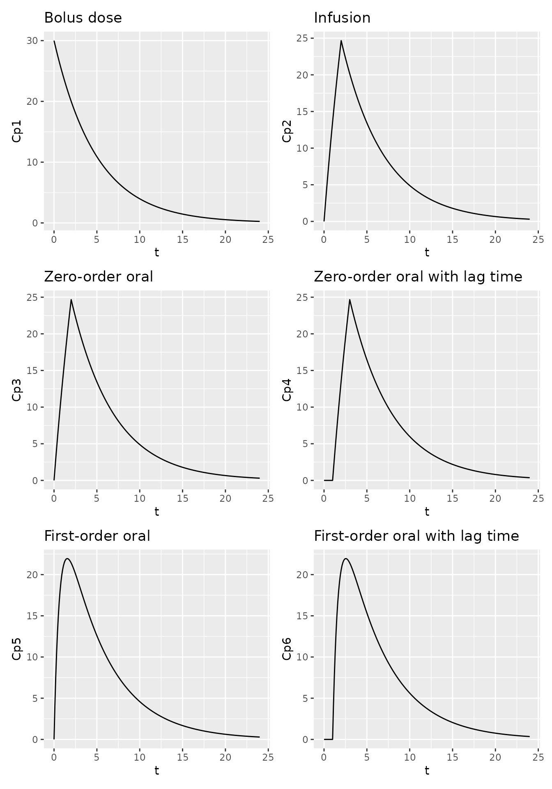

pmxTools includes functions for constructing
pharmacokinetic (PK) concentration-time curves for a range of common
compartmental systems using PK parameters and microconstants. The
underlying solutions are based on Julie Bertrand and France Mentré’s Mathematical
Expressions of the Pharmacokinetic and Pharmacodynamic Models
implemented in the Monolix software, published in 2008.
The options available are by necessity confined to one-, two- and
three-compartmental linear models with intravenous bolus, infusion or
oral dosing (the latter with zero- or first-order absorption). If more
complex systems are needed, you are probably better off using an
ODE-based simulation package such as RxODE
or mrgSolve.
Specifying model parameters
Models take dose, time and PK parameters as inputs. Names for some PK parameters, especially volumes and intercompartmental clearances, vary by model type.
| Parameter | Description | Used for |
|---|---|---|
t |
Time | Single-dose |
tad |
Time after last dose | Steady state |
dose |
Dose | All |
CL |
Clearance | All |
V, V1
|
Central volume of distribution | All |
V2 |
First peripheral volume of distribution | Two- and three-compartment models |
V3 |
Second peripheral volume of distribution | Three-compartment models |
Q, Q1, Q2
|
Intercompartmental clearance (between V1 and V2) | Two- and three-compartment models |
Q3 |
Intercompartmental clearance (between V1 and V3) | Three-compartment models |
tlag |
Lag time | Models with lag time |
tinf |
Duration of infusion | Models with infusion |
dur |
Duration of zero-order absorption | Models with zero-order absorption |
ka |
First-order absorption rate | Models with first-order absorption |
One-compartment, single dose
Available functions include:
| Model | Variant | Call |
|---|---|---|
| 1-compartment | Single-dose, bolus | calc_sd_1cmt_linear_bolus(t, dose, CL, V) |
| Single-dose, infusion | calc_sd_1cmt_linear_infusion(t, dose, CL, V, tinf) |
|
| Single-dose, zero-order oral absorption | calc_sd_1cmt_linear_oral_0(t, dose, CL, V, dur) |
|
| Single-dose, zero-order oral absorption with lag time | calc_sd_1cmt_linear_oral_0_lag(t, dose, CL, V, dur, tlag) |
|
| Single-dose, first-order oral absorption | calc_sd_1cmt_linear_oral_1(t, dose, CL, V, ka) |
|
| Single-dose, first-order oral absorption with lag time | calc_sd_1cmt_linear_oral_1_lag(t, dose, CL, V, ka, tlag) |
For example -
library(ggplot2)
t <- seq(0, 24, by=0.1)
df1 <- data.frame(t = t,
Cp1 = calc_sd_1cmt_linear_bolus(t = t, dose = 600, CL = 5, V = 20),
Cp2 = calc_sd_1cmt_linear_infusion(t = t, dose = 600, CL = 5, V = 20, tinf=2),
Cp3 = calc_sd_1cmt_linear_oral_0(t = t, dose = 600, CL = 5, V = 20, dur=2),
Cp4 = calc_sd_1cmt_linear_oral_0_lag(t = t, dose = 600, CL = 5, V = 20, dur=2, tlag=1),
Cp5 = calc_sd_1cmt_linear_oral_1(t = t, dose = 600, CL = 5, V = 20, ka=1.5),
Cp6 = calc_sd_1cmt_linear_oral_1_lag(t = t, dose = 600, CL = 5, V = 20, ka=1.5, tlag=1))
p1.1 <- ggplot(df1, aes(t, Cp1)) +
geom_line() +
labs(title="Bolus dose")
p1.2 <- ggplot(df1, aes(t, Cp2)) +
geom_line() +
labs(title="Infusion")
p1.3 <- ggplot(df1, aes(t, Cp3)) +
geom_line() +
labs(title="Zero-order oral")
p1.4 <- ggplot(df1, aes(t, Cp4)) +
geom_line() +
labs(title="Zero-order oral with lag time")
p1.5 <- ggplot(df1, aes(t, Cp5)) +
geom_line() +
labs(title="First-order oral")
p1.6 <- ggplot(df1, aes(t, Cp6)) +
geom_line() +
labs(title="First-order oral with lag time")
p1.1 + p1.2 + p1.3 + p1.4 + p1.5 + p1.6 + plot_layout(nrow=3)One-compartment, steady state
Available functions include:
| Model | Variant | Call |
|---|---|---|
| 1-compartment | Steady state, bolus | calc_ss_1cmt_linear_bolus(tad, tau, dose, CL, V) |
| Steady state, infusion | calc_ss_1cmt_linear_infusion(tad, tau, dose, CL, V, tinf) |
|
| Steady state, zero-order oral absorption | calc_ss_1cmt_linear_oral_0(tad, tau, dose, CL, V, dur) |
|
| Steady state, zero-order oral absorption with lag time | calc_ss_1cmt_linear_oral_0_lag(tad, tau, dose, CL, V, dur, tlag) |
|
| Steady state, first-order oral absorption | calc_ss_1cmt_linear_oral_1(tad, tau, dose, CL, V, ka) |
|
| Steady state, first-order oral absorption with lag time | calc_ss_1cmt_linear_oral_1_lag(tad, tau, dose, CL, V, ka, tlag) |
For example -
t <- seq(0, 24, by=0.1)
df1ss <- data.frame(t = t,
Cp1 = calc_ss_1cmt_linear_bolus(t = t, tau = 24, dose = 600, CL = 1, V = 20),
Cp2 = calc_ss_1cmt_linear_infusion(t = t, tau = 24, dose = 600, CL = 1, V = 20, tinf=2),
Cp3 = calc_ss_1cmt_linear_oral_0(t = t, tau = 24, dose = 600, CL = 1, V = 20, dur=2),
Cp4 = calc_ss_1cmt_linear_oral_0_lag(t = t, tau = 24, dose = 600, CL = 1, V = 20, dur=2, tlag=1.5),
Cp5 = calc_ss_1cmt_linear_oral_1(t = t, tau = 24, dose = 600, CL = 1, V = 20, ka=1.5),
Cp6 = calc_ss_1cmt_linear_oral_1_lag(t = t, tau = 24, dose = 600, CL = 1, V = 20, ka=1.5, tlag=1.5))
p1.1ss <- ggplot(df1ss, aes(t, Cp1)) +
geom_line() +
labs(title="Bolus dose")
p1.2ss <- ggplot(df1ss, aes(t, Cp2)) +
geom_line() +
labs(title="Infusion")
p1.3ss <- ggplot(df1ss, aes(t, Cp3)) +
geom_line() +
labs(title="Zero-order oral")
p1.4ss <- ggplot(df1ss, aes(t, Cp4)) +
geom_line() +
labs(title="Zero-order oral with lag time")
p1.5ss <- ggplot(df1ss, aes(t, Cp5)) +
geom_line() +
labs(title="First-order oral")
p1.6ss <- ggplot(df1ss, aes(t, Cp6)) +
geom_line() +
labs(title="First-order oral with lag time")
p1.1ss + p1.2ss + p1.3ss + p1.4ss + p1.5ss + p1.6ss + plot_layout(nrow=3)Two-compartment, single dose
Available functions include:
| Model | Variant | Call |
|---|---|---|
| 2-compartment | Single-dose, bolus | calc_sd_2cmt_linear_bolus(t, dose, CL, V1, V2, Q) |
| Single-dose, infusion | calc_sd_2cmt_linear_infusion(t, dose, CL, V1, V2, Q, tinf) |
|
| Single-dose, zero-order oral absorption | calc_sd_2cmt_linear_oral_0(t, dose, CL, V1, V2, Q, dur) |
|
| Single-dose, zero-order oral absorption with lag time | calc_sd_2cmt_linear_oral_0_lag(t, dose, CL, V1, V2, Q, dur, tlag) |
|
| Single-dose, first-order oral absorption | calc_sd_2cmt_linear_oral_1(t, dose, CL, V1, V2, Q, ka) |
|
| Single-dose, first-order oral absorption with lag time | calc_sd_2cmt_linear_oral_1_lag(t, dose, CL, V1, V2, Q, ka, tlag) |
For example -
t <- seq(0, 24, by=0.1)
df2 <- data.frame(t = t,
Cp1 = calc_sd_2cmt_linear_bolus(t = t, dose = 600, CL = 5, V1 = 20, V2 = 80, Q = 1),
Cp2 = calc_sd_2cmt_linear_infusion(t = t, dose = 600, CL = 5, V1 = 20, V2 = 80, Q = 1, tinf=2),
Cp3 = calc_sd_2cmt_linear_oral_0(t = t, dose = 600, CL = 5, V1 = 20, V2 = 80, Q = 1, dur=2),
Cp4 = calc_sd_2cmt_linear_oral_0_lag(t = t, dose = 600, CL = 5, V1 = 20, V2 = 80, Q = 1, dur=2, tlag=1),
Cp5 = calc_sd_2cmt_linear_oral_1(t = t, dose = 600, CL = 5, V1 = 20, V2 = 80, Q = 1, ka=1.5),
Cp6 = calc_sd_2cmt_linear_oral_1_lag(t = t, dose = 600, CL = 5, V1 = 20, V2 = 80, Q = 1, ka=1.5, tlag=1))
p2.1 <- ggplot(df2, aes(t, Cp1)) +
geom_line() +
labs(title="Bolus dose")
p2.2 <- ggplot(df2, aes(t, Cp2)) +
geom_line() +
labs(title="Infusion")
p2.3 <- ggplot(df2, aes(t, Cp3)) +
geom_line() +
labs(title="Zero-order oral")
p2.4 <- ggplot(df2, aes(t, Cp4)) +
geom_line() +
labs(title="Zero-order oral with lag time")
p2.5 <- ggplot(df2, aes(t, Cp5)) +
geom_line() +
labs(title="First-order oral")
p2.6 <- ggplot(df2, aes(t, Cp6)) +
geom_line() +
labs(title="First-order oral with lag time")
p2.1 + p2.2 + p2.3 + p2.4 + p2.5 + p2.6 + plot_layout(nrow=3)Two-compartment, steady state
Available functions include:
| Model | Variant | Call |
|---|---|---|
| 2-compartment | Steady state, bolus | calc_ss_2cmt_linear_bolus(tad, tau, dose, CL, V1, V2, Q) |
| Steady state, infusion | calc_ss_2cmt_linear_infusion(tad, tau, dose, CL, V1, V2, Q, tinf) |
|
| Steady state, zero-order oral absorption | calc_ss_2cmt_linear_oral_0(tad, tau, dose, CL, V1, V2, Q, dur) |
|
| Steady state, zero-order oral absorption with lag time | calc_ss_2cmt_linear_oral_0_lag(tad, tau, dose, CL, V1, V2, Q, dur, tlag) |
|
| Steady state, first-order oral absorption | calc_ss_2cmt_linear_oral_1(tad, tau, dose, CL, V1, V2, Q, ka) |
|
| Steady state, first-order oral absorption with lag time | calc_ss_2cmt_linear_oral_1_lag(tad, tau, dose, CL, V1, V2, Q, ka, tlag) |
For example -
t <- seq(0, 24, by=0.1)
df2ss <- data.frame(t = t,
Cp1 = calc_ss_2cmt_linear_bolus(tad = t, tau = 24, dose = 600, CL = 1, V1 = 20, V2 = 80, Q = 0.25),
Cp2 = calc_ss_2cmt_linear_infusion(tad = t, tau = 24, dose = 600, CL = 1, V1 = 20, V2 = 80, Q = 0.25, tinf=2),
Cp3 = calc_ss_2cmt_linear_oral_0(tad = t, tau = 24, dose = 600, CL = 1, V1 = 20, V2 = 80, Q = 0.25, dur=2),
Cp4 = calc_ss_2cmt_linear_oral_0_lag(tad = t, tau = 24, dose = 600, CL = 1, V1 = 20, V2 = 80, Q = 0.25, dur=2, tlag=1.5),
Cp5 = calc_ss_2cmt_linear_oral_1(tad = t, tau = 24, dose = 600, CL = 1, V1 = 20, V2 = 80, Q = 0.25, ka=1.5),
Cp6 = calc_ss_2cmt_linear_oral_1_lag(tad = t, tau = 24, dose = 600, CL = 1, V1 = 20, V2 = 80, Q = 0.25, ka=1.5, tlag=1.5))
p2.1ss <- ggplot(df2ss, aes(t, Cp1)) +
geom_line() +
labs(title="Bolus dose")
p2.2ss <- ggplot(df2ss, aes(t, Cp2)) +
geom_line() +
labs(title="Infusion")
p2.3ss <- ggplot(df2ss, aes(t, Cp3)) +
geom_line() +
labs(title="Zero-order oral")
p2.4ss <- ggplot(df2ss, aes(t, Cp4)) +
geom_line() +
labs(title="Zero-order oral with lag time")
p2.5ss <- ggplot(df2ss, aes(t, Cp5)) +
geom_line() +
labs(title="First-order oral")
p2.6ss <- ggplot(df2ss, aes(t, Cp6)) +
geom_line() +
labs(title="First-order oral with lag time")
p2.1ss + p2.2ss + p2.3ss + p2.4ss + p2.5ss + p2.6ss + plot_layout(nrow=3)Three-compartment, single dose
Available functions include:
| Model | Variant | Call |
|---|---|---|
| 3-compartment | Single-dose, bolus | calc_sd_3cmt_linear_bolus(t, dose, CL, V1, V2, V3, Q2, Q3) |
| Single-dose, infusion | calc_sd_3cmt_linear_infusion(t, dose, CL, V1, V2, V3, Q2, Q3, tinf) |
|
| Single-dose, zero-order oral absorption | calc_sd_3cmt_linear_oral_0(t, dose, CL, V1, V2, V3, Q2, Q3, dur) |
|
| Single-dose, zero-order oral absorption with lag time | calc_sd_3cmt_linear_oral_0_lag(t, dose, CL, V1, V2, V3, Q2, Q3, dur, tlag) |
|
| Single-dose, first-order oral absorption | calc_sd_3cmt_linear_oral_1(t, dose, CL, V1, V2, V3, Q2, Q3, ka) |
|
| Single-dose, first-order oral absorption with lag time | calc_sd_3cmt_linear_oral_1_lag(t, dose, CL, V1, V2, V3, Q2, Q3, ka, tlag) |
For example -
t <- seq(0, 24, by=0.1)
df3 <- data.frame(t = t,
Cp1 = calc_sd_3cmt_linear_bolus(t = t, CL = 3.5, V1 = 20, V2 = 500, V3 = 200, Q2 = 0.5, Q3 = 0.05, dose = 600),
Cp2 = calc_sd_3cmt_linear_infusion(t = t, CL = 3.5, V1 = 20, V2 = 500, V3 = 200, Q2 = 0.5, Q3 = 0.05, dose = 600, tinf=2),
Cp3 = calc_sd_3cmt_linear_oral_0(t = t, CL = 3.5, V1 = 20, V2 = 500, V3 = 200, Q2 = 0.5, Q3 = 0.05, dose = 600, dur=2),
Cp4 = calc_sd_3cmt_linear_oral_0_lag(t = t, CL = 3.5, V1 = 20, V2 = 500, V3 = 200, Q2 = 0.5, Q3 = 0.05, dose = 600, dur=2, tlag=1),
Cp5 = calc_sd_3cmt_linear_oral_1(t = t, CL = 3.5, V1 = 20, V2 = 500, V3 = 200, Q2 = 0.5, Q3 = 0.05, dose = 600, ka=1.5),
Cp6 = calc_sd_3cmt_linear_oral_1_lag(t = t, CL = 3.5, V1 = 20, V2 = 500, V3 = 200, Q2 = 0.5, Q3 = 0.05, dose = 600, ka=1.5, tlag=1))
p3.1 <- ggplot(df3, aes(t, Cp1)) +
geom_line() +
labs(title="Bolus dose")
p3.2 <- ggplot(df3, aes(t, Cp2)) +
geom_line() +
labs(title="Infusion")
p3.3 <- ggplot(df3, aes(t, Cp3)) +
geom_line() +
labs(title="Zero-order oral")
p3.4 <- ggplot(df3, aes(t, Cp4)) +
geom_line() +
labs(title="Zero-order oral with lag time")
p3.5 <- ggplot(df3, aes(t, Cp5)) +
geom_line() +
labs(title="First-order oral")
p3.6 <- ggplot(df3, aes(t, Cp6)) +
geom_line() +
labs(title="First-order oral with lag time")
p3.1 + p3.2 + p3.3 + p3.4 + p3.5 + p3.6 + plot_layout(nrow=3)
Three-compartment, steady state
Available functions include:
| Model | Variant | Call |
|---|---|---|
| 3-compartment | Single-dose, bolus | calc_ss_3cmt_linear_bolus(tad, tau, dose, CL, V1, V2, V3, Q2, Q3) |
| Single-dose, infusion | calc_ss_3cmt_linear_infusion(tad, tau, dose, CL, V1, V2, V3, Q2, Q3, tinf) |
|
| Single-dose, zero-order oral absorption | calc_ss_3cmt_linear_oral_0(tad, tau, dose, CL, V1, V2, V3, Q2, Q3, dur) |
|
| Single-dose, zero-order oral absorption with lag time | calc_ss_3cmt_linear_oral_0_lag(tad, tau, dose, CL, V1, V2, V3, Q2, Q3, dur, tlag) |
|
| Single-dose, first-order oral absorption | calc_ss_3cmt_linear_oral_1(tad, tau, dose, CL, V1, V2, V3, Q2, Q3, ka) |
|
| Single-dose, first-order oral absorption with lag time | calc_ss_3cmt_linear_oral_1_lag(tad, tau, dose, CL, V1, V2, V3, Q2, Q3, ka, tlag) |
For example -
t <- seq(0, 24, by=0.1)
df3ss <- data.frame(t = t,
Cp1 = calc_ss_3cmt_linear_bolus(tad = t, tau = 24, dose = 600, CL = 1, V1 = 20, V2 = 500, V3 = 200, Q2 = 0.5, Q3 = 0.05),
Cp2 = calc_ss_3cmt_linear_infusion(tad = t, tau = 24, dose = 600, CL = 1, V1 = 20, V2 = 500, V3 = 200, Q2 = 0.5, Q3 = 0.05, tinf=2),
Cp3 = calc_ss_3cmt_linear_oral_0(tad = t, tau = 24, dose = 600, CL = 1, V1 = 20, V2 = 500, V3 = 200, Q2 = 0.5, Q3 = 0.05, dur=2),
Cp4 = calc_ss_3cmt_linear_oral_0_lag(tad = t, tau = 24, dose = 600, CL = 1, V1 = 20, V2 = 500, V3 = 200, Q2 = 0.5, Q3 = 0.05, dur=2, tlag=1.5),
Cp5 = calc_ss_3cmt_linear_oral_1(tad = t, tau = 24, dose = 600, CL = 1, V1 = 20, V2 = 500, V3 = 200, Q2 = 0.5, Q3 = 0.05, ka=1.5),
Cp6 = calc_ss_3cmt_linear_oral_1_lag(tad = t, tau = 24, dose = 600, CL = 1, V1 = 20, V2 = 500, V3 = 200, Q2 = 0.5, Q3 = 0.05, ka=1.5, tlag=1.5))
p3.1ss <- ggplot(df3ss, aes(t, Cp1)) +
geom_line() +
labs(title="Bolus dose")
p3.2ss <- ggplot(df3ss, aes(t, Cp2)) +
geom_line() +
labs(title="Infusion")
p3.3ss <- ggplot(df3ss, aes(t, Cp3)) +
geom_line() +
labs(title="Zero-order oral")
p3.4ss <- ggplot(df3ss, aes(t, Cp4)) +
geom_line() +
labs(title="Zero-order oral with lag time")
p3.5ss <- ggplot(df3ss, aes(t, Cp5)) +
geom_line() +
labs(title="First-order oral")
p3.6ss <- ggplot(df3ss, aes(t, Cp6)) +
geom_line() +
labs(title="First-order oral with lag time")
p3.1ss + p3.2ss + p3.3ss + p3.4ss + p3.5ss + p3.6ss + plot_layout(nrow=3)
Multiple dosing
Being able to display single-dose and steady state curves for various
commonly-seen systems is all very well but it is often more useful to
show a concentration-time curve which demonstrates accumulation and time
to steady state. The pk_curve() function makes this
straightforward by using the principle of superposition.
dfcurve1 <- pk_curve(t=seq(0,168,by=0.1), model="3cmt_oral", ii=24, addl=12,
params=list(CL=1.5, V1=25, V2=2, V3=5, Q2=0.5, Q3=0.25, ka=1))
ggplot(dfcurve1, aes(t, cp)) +
geom_line()